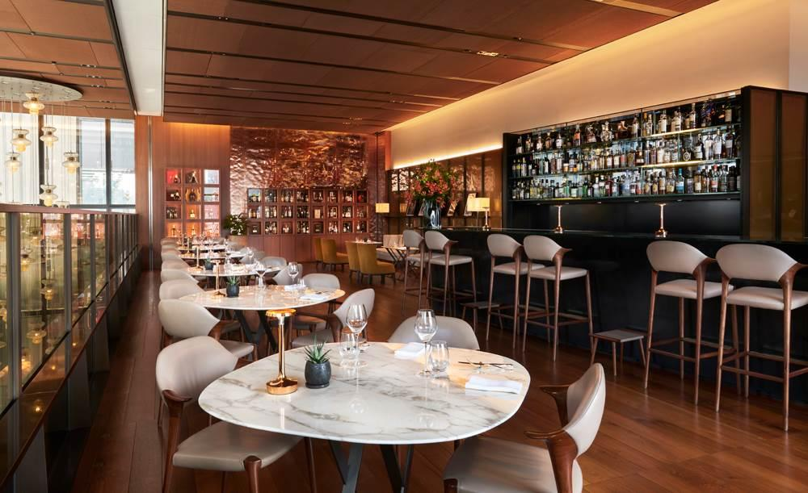

平素よりOsteria LUCEをご愛顧いただきまして誠にありがとうございます。
誠に勝手ながら、年末年始は下記の通り営業時間・定休日を変更させていただきます。
12月30日（月） 通常営業（17:30〜23:00）
12月31日（火） ディナーのみ営業（17:30〜22:00）
1月1日（水）〜1月3日（金） 臨時休業
1月4日（土） 通常営業再開
ご不便をおかけいたしますが、何卒ご理解のほどよろしくお願いいたします。年末年始のご予約はお電話（055-123-4567）またはご予約フォームよりお受けしております。
皆様のご来店を心よりお待ち申し上げております。
今冬限定の特別コース「トリュフ＆フォアグラコース（全8皿）¥18,000」が登場いたしました。
冬季限定コース 全8皿（¥18,000 税・サービス料別）
前菜：フォアグラのソテー バルサミコとイチジクのコンフィチュール
スープ：冬野菜のビスク 白トリュフオイル香る
パスタ①：白トリュフのタヤリン バターソース仕立て
パスタ②：ポルチーニとサルシッチャのリガトーニ
魚料理：山梨・河口湖産ニジマスのアクアパッツァ
肉料理：山梨黒毛和牛のビステッカ 赤ワインソース
ドルチェ：パネトーネアイス ピスタチオのクリームと共に
小菓子：カンノーリ・ボンボーニ
期間は2025年2月末日まで。ご予約時に「冬季コース希望」とお申し付けください。ワインペアリング（＋¥6,000）もございます。
今年もクリスマス特別ディナーのご予約を承ります。大切な方と過ごす特別な夜に、Osteria LUCEをぜひご利用ください。
開催日：2024年12月24日（火）・25日（水）
時間：17:30〜 / 20:00〜（2部制）
料金：お一人様 ¥16,000（税・サービス料別）
内容：シャンパン乾杯・全9皿スペシャルコース・特製ブッシュ・ド・ノエル付き
定員：各回20名様（席数に限りがございます）
ご予約はお電話（055-123-4567）にて承ります。12月10日以降のキャンセルはキャンセル料が発生いたします。お早めのご予約をおすすめいたします。
秋の味覚を存分に取り入れた新メニューへリニューアルいたしました。山梨の農家から直送される旬の食材を贅沢に使った一皿をお楽しみください。
秋の新メニュー（一部）
・松茸とポルチーニのリゾット（¥2,600）
・サンマのカルパッチョ 柚子風味（¥1,400）
・栗とゴルゴンゾーラのニョッキ クリームソース（¥1,900）
・猪肉のラグー タリアテッレ（¥2,200）
・山梨産ぶどうのセミフレッド（¥900）
メニューの詳細はメニューページをご覧ください。仕入れ状況により変更となる場合がございます。
ソムリエ・田中誠がセレクトしたイタリア各地のワインと、シェフ特製料理のマリアージュをお楽しみいただけるプレミアムディナーを開催いたします。
開催日：10月5日（土）・10月19日（土）
時間：18:30 スタート（約3時間）
料金：お一人様 ¥22,000（税・サービス料込み）
内容：全6皿コース＋ペアリングワイン6種（泡1・白2・赤3）
定員：各回8名様限定
お申し込みはお電話（055-123-4567）にて先着順で承ります。満席の場合はキャンセル待ちをお受けいたします。
平素よりOsteria LUCEをご愛顧いただきまして誠にありがとうございます。
誠に勝手ながら、下記の期間を夏季休業とさせていただきます。
夏季休業期間：2024年8月12日（月）〜8月15日（木）
営業再開：2024年8月16日（金）17:30〜
休業期間中にいただいたご予約・お問い合わせには、8月16日以降に順次ご返答いたします。大変ご不便をおかけいたしますが、何卒ご理解のほどよろしくお願いいたします。
お客様からのご要望にお応えし、6月より土曜・日曜・祝日のランチ営業を再開いたします。
ランチ営業日：毎週土曜・日曜・祝日
営業時間：11:30〜14:30（L.O. 14:00）
ランチメニュー：パスタランチ（¥1,500〜）・コースランチ（¥3,500〜）
週末のお昼に、旬の食材を使った本格イタリアンをお楽しみください。ランチのご予約も承っておりますので、お電話またはご予約フォームよりお気軽にご連絡ください。